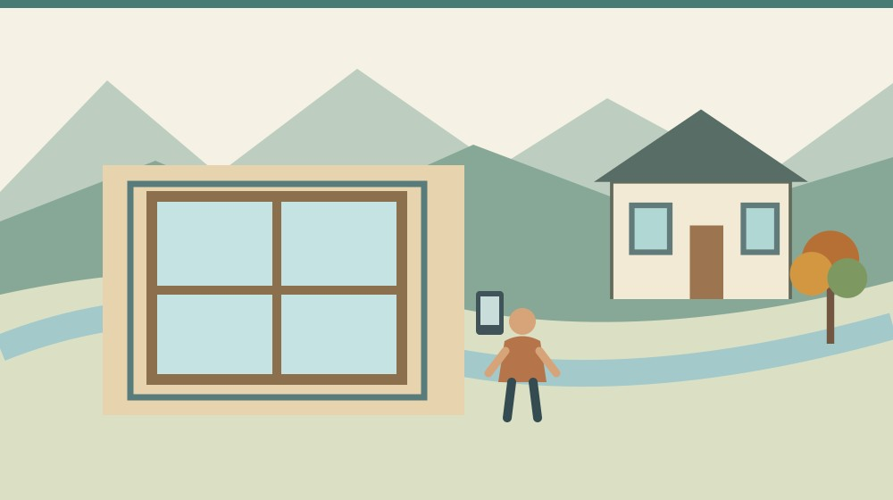
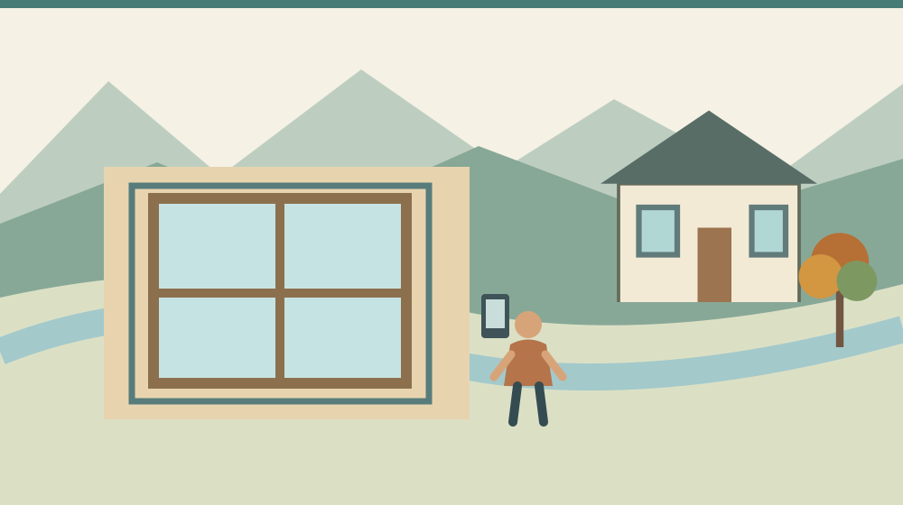
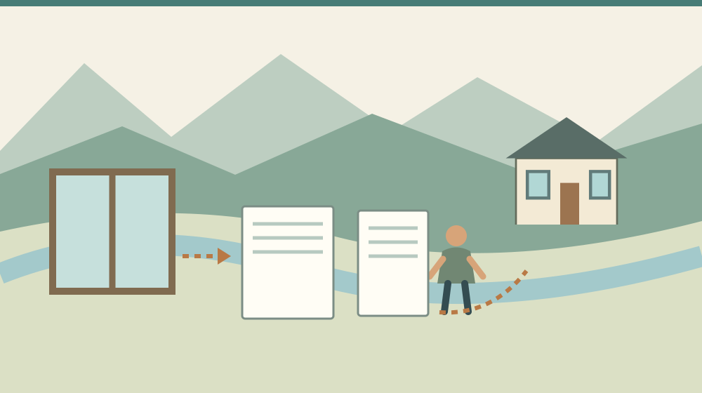

森町の窓断熱補助2026｜冬支度前の確認

Q. 森町の家の窓を直したい。2026年の補助は、いつまでに何をすればいい？
国の先進的窓リノベ2026事業は、対象製品を使う既存住宅等の断熱改修を支援します。住宅は1戸上限100万円、1申請の補助額は5万円以上です。予約は遅くとも11月16日、交付申請は12月31日までで、予算到達時は終了します。申請する登録事業者へ、対象窓と工程を先に相談してください。
森町の家で冬を迎える前に考えること
森町で家を住み継ぐ家族は、屋根や水回りだけでなく、冬を過ごす部屋の寒さにも向き合います。古い家を維持してきた方が、修繕費を少しずつ用意してきた負担もあります。補助があるから全部を取り替える、という順番にはしたくありません。
私、大石浩之（磐田市／不動産業）は、改修の話をするとき、暮らしで困っている場所と、工事に使えるお金を先に分けたいと考えます。補助額の上限を見て工事を広げると、家族が本当に直したい窓が後ろに回ることがあるからです。
この記事は2026年10月25日に事業の公式本文を確認しています。対象は国の先進的窓リノベ2026事業です。森町だけの補助金ではありません。森町の住宅でも、個別の建物、工事、製品、契約などの条件を満たす必要があります。
移住先を賃貸にするか購入するか迷っている方は、森町の住まいを賃貸と購入で考える記事も参照できます。住む場所を選ぶ話と、選んだ家へどこまで工事をするかは、分けて順番に考えます。
事実整理：補助は工事費の一律割合ではない
先進的窓リノベ2026事業の正式名称は、断熱窓への改修促進等による住宅の省エネ・省ＣＯ２加速化支援事業です。公式の事業概要では、戸建てや集合住宅などの既存建物で、開口部の断熱性能を向上させる改修を対象としています。
住宅の補助上限は1戸あたり100万円です。ただし、100万円が一律に交付されるわけではありません。補助額は製品の性能、大きさ、住宅等の建て方に応じた定額の合計です。見積額の半額などと、自己判断で掛け算する制度ではありません。
交付申請は、1申請の合計補助額が5万円以上の工事が対象です。工事代金が5万円以上ならよい、という意味ではない点に注意します。製品ごとの補助額を合計した結果と、業者へ支払う工事代金は別の数字です。
公式の対象工事には、ガラス交換、内窓設置、外窓交換などがあります。どれを選べるかは既存の窓や施工条件で変わるため、この記事だけで決定できません。性能要件を満たすことが確認された製品を使う必要があります。
ドア交換も対象となる場合がありますが、他の窓工事と同一の契約で、同時に申請することが条件です。玄関ドアだけの工事を、この事業へ単独で申請できるという案内ではありません。窓とドアの契約を分ける前に、事業者へ確認します。
事業公式の対象要件は、所有者等が登録された窓リノベ事業者と契約する形を示しています。一般の消費者が自分で補助金を申請して受け取る仕組みではありません。工事店を探すときは、施工できるかと、登録事業者かを別々に確認します。

予約と交付申請には別の締切がある
先進的窓リノベ2026事業の交付申請予約期間は、遅くとも2026年11月16日までです。交付申請期間は遅くとも12月31日までとされています。いずれも予算上限に達した場合はその時点で終了するため、日付だけで受付を保証できません。
予約の期限と、交付申請の期限は同じではありません。11月16日までに相談を始めれば十分という意味でもありません。どの書類と工程が必要かを登録事業者へ確認し、家族の相談日と制度上の申請日を混同しないようにします。
公式概要では、対象工事の着手日は2025年11月28日以降です。契約期間は工事着手日以前とされています。これから契約する家庭だけでなく、既に工事を進めた家庭も、日付と契約内容を登録事業者へ提示して個別に照合する必要があります。
2026年10月25日に見た公式トップは、10月24日午前0時時点の申請額割合を31％と表示していました。審査中の申請や予約も含む数字です。この記事を読む時点の残枠を示すものではなく、掲載時点を持つ情報として扱います。
31％なら自分の工事は必ず間に合う、と私は判断しません。予算の残りと、施工店の工程、製品の手配、家族の立会い日は別です。登録事業者に工事と申請の予定を聞き、どこが未確定かを確認する方が、数字を眺めるだけより役に立ちます。
年末までの予定を組む場合は、工事の完了予定だけでなく、申請を出せる見込みも確認します。この記事では個別の施工店の空き日程や納期を調べていません。相談すれば年内に施工できるという約束を、記事から作ることはできません。
見積りは工事費、補助額、支払時期に分ける
窓断熱の見積りを比べるときは、工事代金と補助予定額を別欄にしてもらう方法があります。製品名、窓の大きさ、工法、対象となる窓数が分かる形なら、同じ条件で比べやすくなります。単に「補助後いくら」という表示だけで判断しないようにします。
例えば工事見積りから補助予定額を差し引く計算は、家族の最終負担を考える材料になります。ただし、交付が確定していない段階では予定額です。補助が受けられなかった場合の支払いをどう扱うかも、契約前に確認する必要があります。
補助金の還元方法は、契約代金への充当か、現金での支払いが公式に示されています。どちらで受け取るかは、登録事業者と事前に合意するものです。現金で後から受け取る方式なら、家計から先に用意するお金が異なる可能性があります。
工事費をいつ支払う契約なのかも確認します。補助があるという話だけで、支払いが工事後まで不要とは限りません。契約時、施工時、完了時など、実際の請求条件を見積りと一緒に残すと、生活費を圧迫しない範囲を考えられます。
窓の工事と一緒に別の修繕を頼む場合は、補助対象の範囲を分けます。室内の仕上げや周辺部の修理まで全部対象だと決めつけません。対象外の費用も含めて住める状態になるのかを確認することが、家の修繕としての判断です。
改修後の性能資料を残す意味は、省エネ部位ラベルと実家の資料整理の記事にもつながります。補助の申請書類と、将来の説明に使う資料は役割が違います。何を施工したか分かる記録を家族で引き継ぎます。
良い点：窓ごとに改修の選択肢を考えられる
先進的窓リノベ2026事業の良い点は、既存住宅の窓を改修する選択肢が用意されていることです。新しい家へ建て替える話だけではなく、今ある家の開口部を見直す入口になります。住み継いできた家を使いながら考えられる余地があります。
ガラス交換、内窓、外窓交換という工事の違いが公式に示されているので、家族も業者へ質問をしやすくなります。工法の名前を知ることは、自分で施工判断をするためではありません。何を変える見積りなのかを理解するための材料です。
登録事業者が申請と還元を担う仕組みも、一般の家庭が複雑な書類をすべて単独で処理しないための入口になります。ただし、その分、家族が契約内容と還元方法を確認する役割は残ります。任せることと、見なくてよいことは同じではありません。
私は、補助があることで、寒さの気になる部屋を見直す相談が始めやすくなる点を評価します。いきなり家全体の改修を決めなくても、困っている窓の写真や部屋の使い方を持って相談できます。使い続ける家の条件を少しずつ調べる入口になります。
注文したい点：補助額だけでは住み心地を判断できない
窓の補助制度は、個別住宅の寒さの原因を診断するものではありません。窓以外の壁や床、換気、部屋の使い方なども含めた判断が必要になる場合があります。私は、対象製品の紹介と、家の状態を確かめる相談をつなげてほしいと思います。
同じ森町内でも、建物の向きや間取りが同じとは限りません。町内で使える制度だから、どの家にも同じ工事が最適とは言えません。この記事は地域の住宅ごとの温度を測定していないため、暖房費の削減額や体感温度の変化を断定しません。
施工後に窓を開け閉めする手順や、掃除のしやすさも家族の条件です。性能の高い製品を選ぶ話と、毎日使う人が扱えるかという話を一緒に確認したいと思います。カタログの性能値だけでなく、操作の説明も受けることを提案します。
私は、締切が近いことで相談を始めるきっかけになる一方、焦って工事を広げてしまわないか迷います。期限を伝えないわけにはいきません。ただ、期限に間に合わせるために家族の予算を超える契約をすることまで、勧めるつもりはありません。

対案・結論：今日、気になる窓を一枚撮る
窓断熱の検討で今日できることは、寒さが気になる部屋の窓を一枚撮り、部屋を使う人と時間を書き添えることです。窓の内外の状態や開閉方法を伝える材料になります。危険な場所へ身を乗り出して、外側を撮影する必要はありません。
写真には部屋の位置と撮影日を添えます。家族の生活が写り込む場合は、事業者へ渡す前に不要な部分を除きます。写真だけで対象製品や施工可否が決まるわけではありませんが、現地確認で何を見るかを相談する入口になります。
登録事業者への質問は、対象工事か、見積りはいくらか、工事と申請がいつできるかの順で整理します。補助予定額と対象外費用を分け、還元方法も確認します。口頭で聞いた予定は、契約や見積りの内容と一致しているか照合してください。
借りている家では、工事を発注する前に持ち主との確認が必要です。所有者の承諾や契約上の扱いを飛ばして、補助の対象だけ先に確かめても工事は進められません。所有者、利用する家族、施工する事業者の役割をそろえてから判断します。
森町公式の空き家・空き地バンクは、物件を探すための入口です。町公式「移住定住手続き」も、住まい探しを移住の段取りに位置付けています。物件情報と窓補助の条件は別なので、購入候補の家が補助対象と確定したように読み替えないでください。
空き家の取得前なら、内覧時に確認する条件の記事と合わせて考えます。窓だけを見て購入を決めず、水回りや家財、他の修繕も確かめます。住み始めるまでに必要な費用の中で、窓の工事を位置付けます。
家族に残す記録：製品と工事前後の資料
窓改修の記録には、施工した部屋、製品名、型番、工事日、事業者、保証や連絡先を残します。契約書や見積書だけで、何階のどの窓を変えたのか後から分からないことを防ぐためです。家族の誰が見ても場所が分かる名称を付けます。
補助の手続き用写真には要件があるため、家族の写真で足りると考えず、登録事業者へ必要な記録を確認します。工事が進むと撮れなくなる部分もあります。記録の担当と撮影時期を、工事前の打合せに入れる方法があります。
住み心地の変化を記録するなら、天気や部屋の使い方も添えます。暖房の使い方を変えたのに、支出の変化を窓だけの効果と決めつけないためです。家族の記録は暮らしを調整する材料であり、第三者の家へ同じ効果を約束する資料ではありません。
大石の視点：補助の上限から工事を決めない
私は、家の修繕を補助の上限から決める順序には賛成しません。家族が困っている場所、今後住む予定、手元に残す生活費を先に並べたいと考えます。私なら、窓の写真の横に「誰が何時に使う部屋か」を書き、見積りを頼む範囲を一度絞ります。これは実際の相談事例ではなく、費用と暮らしを結び付けるための私の判断です。金額が合わなければ、工事を保留する余地も残します。
今日の一歩は、家中の窓を交換すると決めることではありません。写真一枚と用途のメモをそろえ、登録事業者へ確認することです。補助の期限と家の状態を両方見て、家族が無理なく維持できる範囲を選びたいと思います。
よくある質問
森町役場へ申請すれば補助を受けられますか？
この記事で扱うのは国の先進的窓リノベ2026事業です。申請手続き、補助金の受取り、消費者への還元は登録された窓リノベ事業者が行います。森町役場へ直接申請する町独自制度としては案内していません。工事を頼む前に、施工業者の事業者登録と、予定する製品・工事が対象になるかを確認してください。
11月16日までに契約すれば間に合いますか？
11月16日は交付申請予約の最終期限として示された日で、契約すれば自動的に予約が済むという意味ではありません。予算到達時は期限前でも受付が終了します。工事と申請に必要な条件を登録事業者へ確認し、家族の契約日、施工予定日、予約や申請の予定を分けて整理してください。
補助は工事費の半額ですか？
補助額は製品の性能や大きさ、住宅等の建て方に応じた定額の合計です。住宅は1戸上限100万円で、1申請の合計補助額が5万円以上となる工事が対象です。工事代金の一律半額ではありません。見積りでは工事代金と補助予定額、対象外費用、還元方法を別々に確認してください。
出典・確認日
2026年10月確認。開催・制度の数値は公式情報、評価と段取りの提案は執筆者の意見です。
- 先進的窓リノベ2026：事業概要（2026年10月25日確認）
- 先進的窓リノベ2026：対象要件（2026年10月25日確認）
- 先進的窓リノベ2026：予算状況（2026年10月25日確認）
- 森町：空き家・空き地バンク（2026年10月25日確認）
- 森町：移住定住手続き（2026年10月25日確認）
開催日時、取扱条件、制度・数値は変わる場合があります。実際の利用前に主催者・担当窓口の最新案内を確認してください。個別の判断が必要な場合は、担当窓口や関係する専門家へご相談ください。